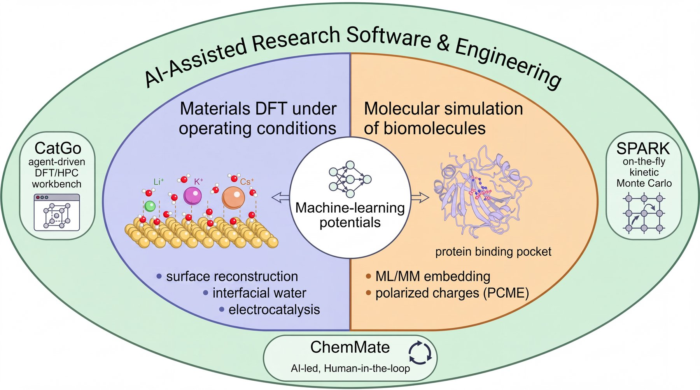

I am an undergraduate in the Department of Chemistry at Fudan University, advised by Prof. Gengfeng Zheng. I am currently a research assistant in the Department of Chemistry and Biochemistry at UC Los Angeles, working with Prof. Anastassia N. Alexandrova. Previously, I worked with Prof. Wan-Lu Li in the Department of Chemical and Nano Engineering at UC San Diego.
Electrocatalysts work in water and under applied potential, and their surfaces reconstruct during the reaction. My research asks how interfacial water and reactants behave on these restructuring surfaces, and moves toward a non-equilibrium picture of electrochemistry. To study this at realistic scale, I use machine-learning potentials and build AI tools that run large calculation campaigns with a human in the loop.
Research Interests
- Surface Reconstruction & Interfacial Structure
- Interfacial water and cavitation, IrOx cluster ensembles, cation effects, reconstructed Cu electrodes
- Catalytic Mechanisms & Multiscale Modeling
- Photocatalytic methane oxidation, N2 reduction on doped MoS2, PEM water electrolysis
- AI-Assisted Scientific Software
- CatGo, ChemMate and SPARK
- Electrostatics in Enzyme Design
- ML/MM charges for protein–ligand binding, force fields fitted with machine-learning potentials

Education & Research Positions
- 09/2026 – 12/2026
(expected)Research Assistant · University of California, Los AngelesProf. Anastassia N. AlexandrovaSite-resolved C–C coupling on restructured Cu electrodes - 09/2025 – 06/2026Research Assistant · University of California, San DiegoProf. Wan-Lu LiComputational electrocatalysis, interfacial modeling, AI-assisted research software
- 02/2024 – 06/2025Research Assistant · Fudan UniversityProf. Gengfeng ZhengPhotocatalytic methane oxidation (experiment and DFT)
- 09/2023 – 07/2027
(expected)B.S. in Chemistry · Fudan UniversityAdvisor: Prof. Gengfeng ZhengGPA: 3.88/4.00 · Shanghai, China
Publications
‡equal contribution · *corresponding author · underlined: me
Journal Articles
-
{{PUBLICATIONS}}
Preprints & Papers Under Review
-
{{PREPRINTS}}
Research Projects
{{RESEARCH}}Software
On-the-fly kinetic Monte Carlo for surface reactions.
Honors, Service & Presentations
Honors and Awards
-
{{AWARDS}}
Professional Service
-
{{SERVICE}}
Presentations
-
{{TALKS}}